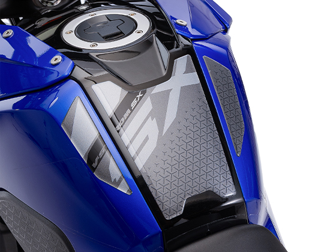
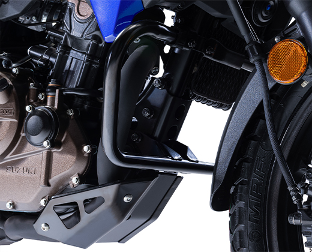
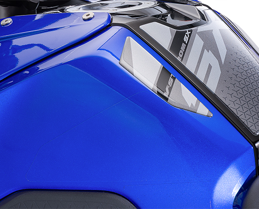
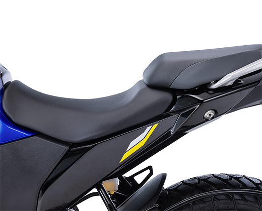
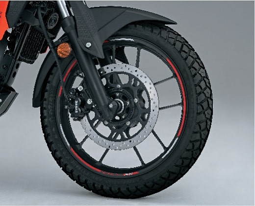
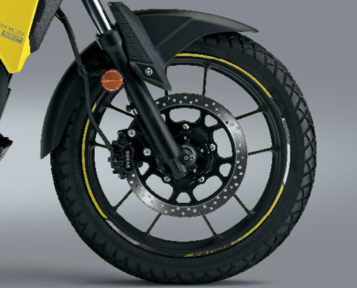

Suzuki Easy Start System
The Suzuki Easy Start System allows the engine to be started with no need to hold down the switch, requiring only a single, brief push (with the clutch pulled in).
The Everyday Explorer
250cc adventure sport tourer, built for the commute and the weekend trail.
Ex-showroom Hyderabad from ₹2,04,220
The V-Strom SX is Suzuki’s 250cc sport adventure tourer. A 249cc oil-cooled single with 26.5 PS, a 19-inch front wheel, 205 mm of ground clearance and an upright riding position make it as comfortable on city streets as it is on broken roads.
Ex-showroom, Hyderabad (Telangana), as published by Suzuki Motorcycle India on 12 Nov 2026. On-road price adds registration, insurance and any accessories you choose.
Get the on-road price| Variant | Ex-showroom |
|---|---|
| V-Strom SX | ₹2,04,220 |
Champion Yellow No. 2 / Glass Sparkle Black
The Suzuki Easy Start System allows the engine to be started with no need to hold down the switch, requiring only a single, brief push (with the clutch pulled in).
A USB outlet on the left side of the instrument cluster can be used to charge a device. It glows blue making it easy to use in low light situations.
SEP engines feature weight saving and friction-reducing technology to allow both low fuel consumption and excellent power characteristics. In the V-STROM SX, the SEP engine offers brisk acceleration but uses little fuel in the process.
The world’s first oil-cooled motorcycle engine was developed by Suzuki and has been updated ever since, becoming the key to producing smaller, lighter engines as the use of an oil cooling system allows a smaller, more compact design.
The 249cm3, 4-stroke 1-cylinder, 4-valve, oil-cooled SOHC engine featured in the V-STROM SX feels strong and linear, offering excellent torque at low rpm and a smooth run up, making it easy to use for beginners and veteran riders alike…
Analytic technology gained through MotoGP was used to develop the valves, shim type roller rocker arms, retainers and piston to reduce their weight. These combined result in a lighter engine with less friction loss.
Printed surface treatment of the piston skirt area has reduced friction loss in the piston itself. This has contributed to increased output and better fuel efficiency.
Sensors monitor and record data like air pressure and air temperature to deliver and inject the ideal amount of fuel to match riding conditions.
Supplied and fitted at any Aarush Suzuki showroom. Ask about accessories

Fuel Tank Pad
Accessory Bar
Fuel Tank Protection
Seat Assembly-Low Height
Wheel Decal (Red)
Wheel Decal (Yellow)Technical data as published by Suzuki Motorcycle India. Specifications can change without notice; our team will confirm details for the variant you choose.
Download V-Strom SX brochure (PDF) Official V-Strom SX page| Engine Type | 4-stroke, Single-cylinder, oil-cooled, SOHC |
|---|---|
| Valve System | 4 valve |
| Bore x Stroke | 76.0 mm x 54.9 mm |
| Displacement | 249 cc |
| Compression Ratio | 10.7 : 1 |
| Max Power | 26.5 PS @ 9,300 rpm |
| Max Torque | 22.2 Nm @ 7,300 rpm |
| Fuel System | Fuel Injection |
| Starter System | Electric |
| Lubrication System | Wet sump |
| Transmission | 6-speed constant mesh |
| Overall Length | 2,180 mm |
|---|---|
| Overall Width | 880 mm |
| Overall Height | 1,355 mm |
| Wheel Base | 1,440 mm |
| Ground Clearance | 205 mm |
| Seat Height | 835 mm |
| Kerb Mass | 167 kg |
| Fuel Tank Capacity | 12 L |
| Front | Disc, single |
|---|---|
| Rear | Disc |
| Front | 100/90-19M/C 57S, tubeless |
|---|---|
| Rear | 140/70-17M/C 66S, tubeless |
| Rake / Trail | 27° / 97 mm |
| Front | Telescopic, coil spring, oil damped |
|---|---|
| Rear | Swing arm type, coil spring, oil damped |
| Ignition System | Electronic ignition |
|---|---|
| Battery | Maintenance Free, 12V 6AH |
| Headlight & Tail Light | LED |
Official Suzuki photography.
FAQs
Price, colours, specifications and test rides for the V-Strom SX at Aarush Suzuki, answered from the details on this page.
Ask us on WhatsAppThe Suzuki V-Strom SX 250 costs ₹2,04,220 ex-showroom in Hyderabad as published by Suzuki Motorcycle India on 12 Nov 2026. See the price table
The on-road price is the ex-showroom price (from ₹2,04,220) plus registration (RTO), insurance and any accessories you choose, so it depends on the variant and options. Aarush Suzuki sales will give you an exact quote: call 88852 46633 or ask on WhatsApp. Get the on-road price
Suzuki lists the V-Strom SX in 5 colours: Champion Yellow No. 2 / Glass Sparkle Black; Pearl Fresh Blue / Glass Sparkle Black; Pearl Glacier White / Metallic Matte Stellar Blue; Glass Sparkle Black; Glass Sparkle Black / Metallic Matte Fibroin Gray. Ask us which colours are in stock. See the colours
The Suzuki V-Strom SX has displacement 249 cc, max power 26.5 PS, max torque 22.2 Nm, kerb weight 167 kg, as published by Suzuki Motorcycle India. Full specifications
Book a test ride online, or visit any of Aarush Suzuki's 12 showrooms in Hyderabad and Telangana. Bring a valid driving licence; our team will call to confirm a time. Book a test ride
Visit any of our 12 showrooms, or tell us when suits you and we’ll have one ready.
Find us
Visit Aarush Suzuki
See our showrooms on the map, then choose the branch nearest to you for directions, a test ride or a service visit.